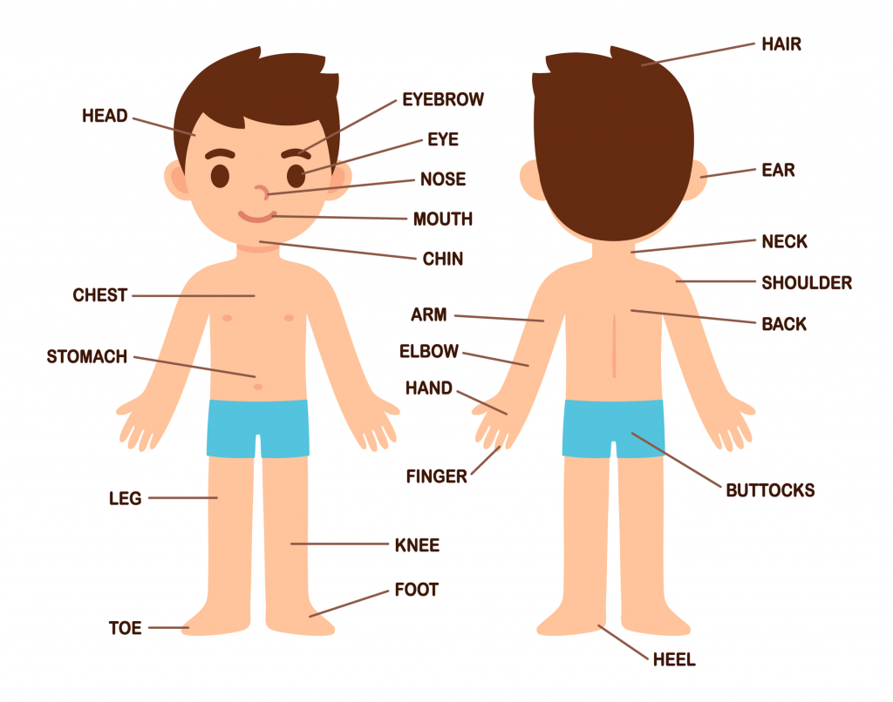

Extremities
There is somebody that can be found in both legs and arms, like joints or nails. Now, let’s see what other body parts are in each of those extremities!
Learning the body parts can help broaden children's learning experience. Here in Lingokids you'll find several fun ways to help your kids learn about this topic.
In order to make it easier to learn, let’s divide the topic into the torso, extremities, and internal parts.
There is somebody that can be found in both legs and arms, like joints or nails. Now, let’s see what other body parts are in each of those extremities!
Now… which ones are the parts of a leg?